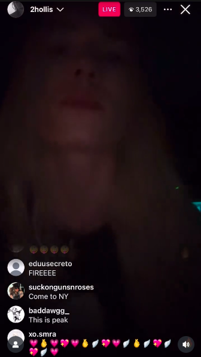

warhorse
"YOU MIGHT BE THE ONLY THING IM NEEDIN'"
To a live audience of about 4,000 people "warhorse" was previewd live on 2hollis's Instagram on May 30th, 2025. Warhorse has still yet to be released by 2hollis on any official sites. Although it has been unofficially 'released' by some fans making remixes of what could be (such as the one you're hearing right now). Warhorse will be on 2hollis yet to be released album, 'superstar' dropping 2026, along with the song superlove which is included in this website.
